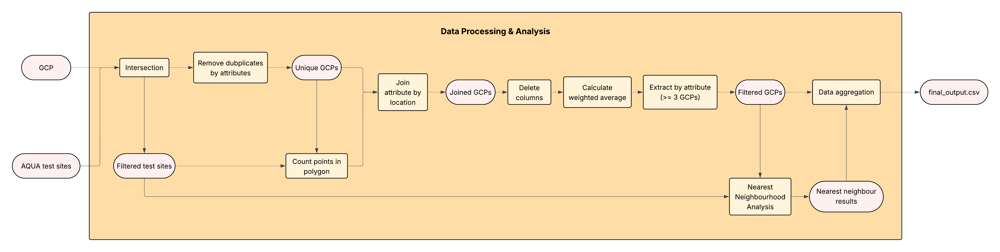
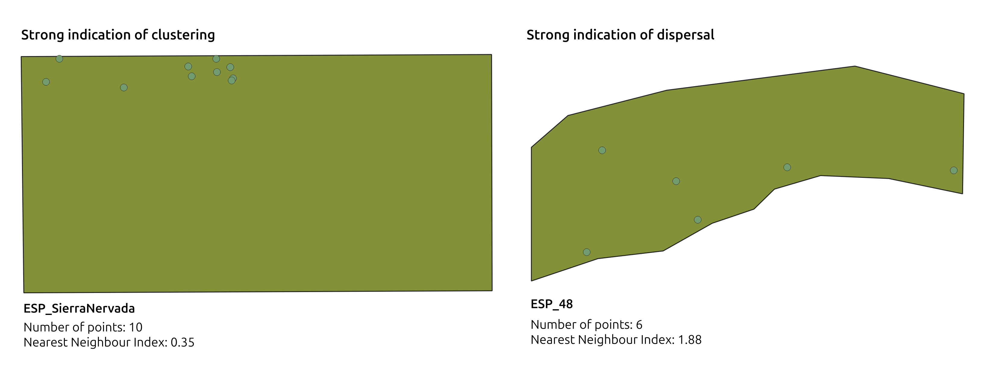
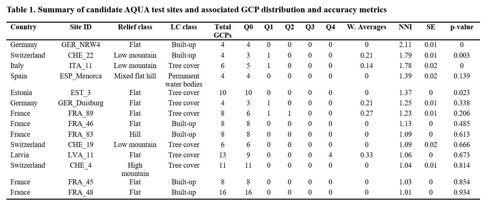

Selection of Suitable AQUA Test Sites for Ground Control Point (GCP) Validation (2025)
Aims and Objectives
This project identified suitable pre-existing AQUA test sites for purchasing and integrating third-party Ground Control Points (GCPs) to independently evaluate the absolute positional accuracy of PlanetScope Independent Reference (IR) imagery.
Objectives- Determine which AQUA test sites spatially intersect with archived GCPs.
- Identify the most suitable sites for validating positional accuracy using third-party GCPs.
- Each test site must contain at least 3 GCPs.
- GCPs should be evenly distributed (avoid clustering).
- Preference is given to sites with higher-accuracy GCPs.
Methodology
The original plan was to manually assess 600+ sites. Instead, a QGIS Python workflow was developed to automate screening and make the process reusable for future studies. Two key challenges related to distribution and accuracy were addressed as follows.

Criteria 2: Spatial Distribution (Nearest Neighbour Index, NNI)
The Nearest Neighbour Index (NNI) was used to describe spatial patterns:
- NNI < 1 → clustered
- NNI ≈ 1 → random
- NNI > 1 → dispersed (preferred)
Issue: The built-in QGIS NNA tool estimates the
study area from the GCP bounding box, not the test site polygon.
Solution: A custom Python implementation computed
NNI using the actual test site geometry.

Criteria 3: GCP Accuracy (Weighted Average)
A weighted-average accuracy score was calculated per site:
- Lower weight → higher-quality GCPs
- Higher weight → lower-quality GCPs
Results
14 suitable candidate sites were identified for purchasing surveyed GCPs.
